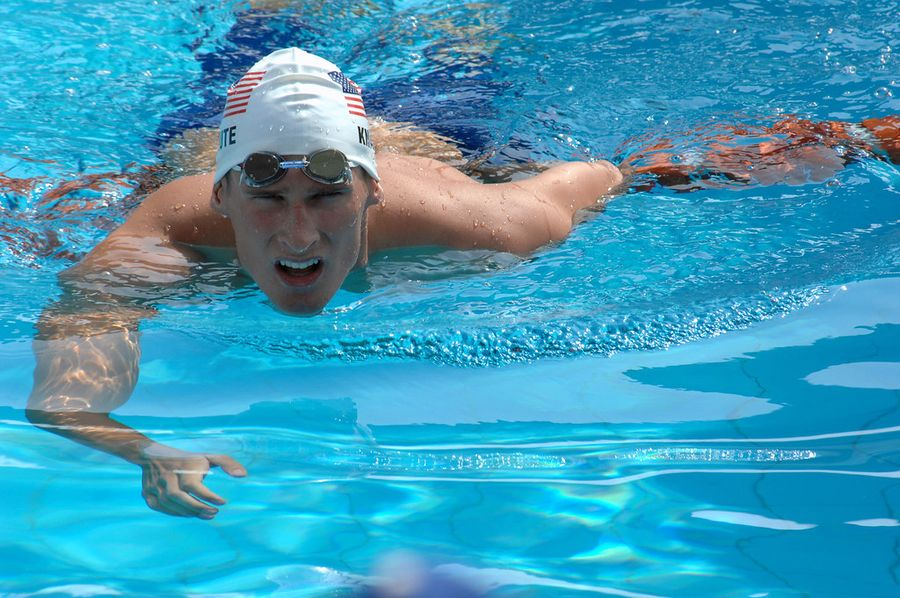
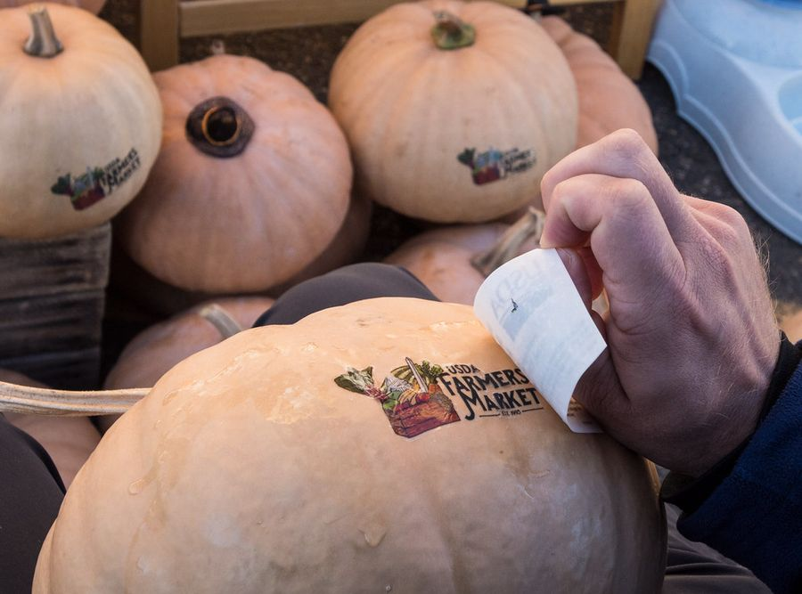

ディーゼルとガソリン、1リットル当たり3ペソの値下げ見込みP3/liter price cuts seen for diesel, gasoline世界市場で供給増加の兆しを受け、来週、再び燃料価格の引き下げが予定されている。ジェッティ・ペトロリアムのレオ・ベラス社長は述べた。
ディーゼルとガソリン、1リットル当たり3ペソの値下げ見込みP3/liter price cuts seen for diesel, gasoline世界市場で供給増加の兆しを受け、来週、再び燃料価格の引き下げが予定されている。ジェッティ・ペトロリアムのレオ・ベラス社長は述べた。 DOLEがエアアジアの人員削減をめぐる対立の緩和に介入Dole steps in to ease AirAsia retrenchment row労働雇用省（DOLE）は、労働争議に対応するため、エアアジア・フィリピン経営陣とパイロットとの会合を仲介している。
DOLEがエアアジアの人員削減をめぐる対立の緩和に介入Dole steps in to ease AirAsia retrenchment row労働雇用省（DOLE）は、労働争議に対応するため、エアアジア・フィリピン経営陣とパイロットとの会合を仲介している。 ベニー・ボートライト、ギラスへの期待に押しつぶされることを拒否Bennie Boatwright refuses to let Gilas expectations sink him日程：FIBAアジア予選ウィンドウ5におけるギラス・ピリピナス ベニー・ボートライトは、ギラス・ピリピナスの帰化選手としてジャスティン・ブラウンリーの後を継ぐという挑戦を受け入れている
ベニー・ボートライト、ギラスへの期待に押しつぶされることを拒否Bennie Boatwright refuses to let Gilas expectations sink him日程：FIBAアジア予選ウィンドウ5におけるギラス・ピリピナス ベニー・ボートライトは、ギラス・ピリピナスの帰化選手としてジャスティン・ブラウンリーの後を継ぐという挑戦を受け入れている 「シンデレラ」ファーム・フレッシュ、最高の舞台へ‘Cinderella’ Farm Fresh reaches grand ballファーム・フレッシュのシンデレラストーリーは最高の舞台にたどり着いた。フォクシーズはネクスレッドが持つ2勝すれば勝ち抜けとなるアドバンテージを覆し、PVLでカメレオンズを退けた
「シンデレラ」ファーム・フレッシュ、最高の舞台へ‘Cinderella’ Farm Fresh reaches grand ballファーム・フレッシュのシンデレラストーリーは最高の舞台にたどり着いた。フォクシーズはネクスレッドが持つ2勝すれば勝ち抜けとなるアドバンテージを覆し、PVLでカメレオンズを退けた カラードの活躍でサヴォージュが無敗を維持Calado helps Savogue stay perfectマーク・カラードは緊迫した第5セットでサヴォージュのために7連続得点を挙げ、スピン・ドクターズはナショナル大学アーキペラゴ・ビルダーズを22-25、2…で振り切った
カラードの活躍でサヴォージュが無敗を維持Calado helps Savogue stay perfectマーク・カラードは緊迫した第5セットでサヴォージュのために7連続得点を挙げ、スピン・ドクターズはナショナル大学アーキペラゴ・ビルダーズを22-25、2…で振り切った スターたちがロックンロール・ナイトレースを彩るStars light up Rock N Roll Night raceさまざまな年齢や技能レベルのランナーたちが日曜日、フィリピンの首都の通りに繰り出す予定だ。AIAロックンロール・ランニング・シリーズ・マニラが主催する…
スターたちがロックンロール・ナイトレースを彩るStars light up Rock N Roll Night raceさまざまな年齢や技能レベルのランナーたちが日曜日、フィリピンの首都の通りに繰り出す予定だ。AIAロックンロール・ランニング・シリーズ・マニラが主催する… アジアと欧州、ボホール・サミットで研究・学術連携の強化を推進Asia, Europe push for stronger research, academic ties at Bohol summitパングラオ、ボホール—アジアと欧州の教育相は、高等教育、研究、学術交流、デジタルトランスフォーメーションにおける協力を深めることで合意した
アジアと欧州、ボホール・サミットで研究・学術連携の強化を推進Asia, Europe push for stronger research, academic ties at Bohol summitパングラオ、ボホール—アジアと欧州の教育相は、高等教育、研究、学術交流、デジタルトランスフォーメーションにおける協力を深めることで合意した フィリピン男子ダブルスチーム、アジアU19セパタクローで銅メダル獲得PH boys doubles team bags bronze in Asian U19 sepak takrawマニラ、フィリピン—フィリピンは金曜日、第1回ASTAF U19アジアセパタクロー選手権の男子ダブルス種目で銅メダルを獲得した
フィリピン男子ダブルスチーム、アジアU19セパタクローで銅メダル獲得PH boys doubles team bags bronze in Asian U19 sepak takrawマニラ、フィリピン—フィリピンは金曜日、第1回ASTAF U19アジアセパタクロー選手権の男子ダブルス種目で銅メダルを獲得した ギラスがシリアを圧倒し、FIBA予選で3位タイに浮上Gilas routs Syria, climbs to third-place tie in Fiba qualifiers日程：FIBAアジア予選ウィンドウ5におけるギラス・ピリピナス マニラ（フィリピン）発――ギラス・ピリピナスはシリアを97-58で圧倒し、Irと3位タイに並んだ
ギラスがシリアを圧倒し、FIBA予選で3位タイに浮上Gilas routs Syria, climbs to third-place tie in Fiba qualifiers日程：FIBAアジア予選ウィンドウ5におけるギラス・ピリピナス マニラ（フィリピン）発――ギラス・ピリピナスはシリアを97-58で圧倒し、Irと3位タイに並んだ 洪水対策資金をミンダナオに振り向けるよう議会に要請Congress urged to redirect flood control funding to Mindanaoコタバト市——大統領和平顧問のメル・セネン・サルミエント氏は、移行を支援するため、平和構築の取り組みに対する政府資金を増額するよう議会に要請していた
洪水対策資金をミンダナオに振り向けるよう議会に要請Congress urged to redirect flood control funding to Mindanaoコタバト市——大統領和平顧問のメル・セネン・サルミエント氏は、移行を支援するため、平和構築の取り組みに対する政府資金を増額するよう議会に要請していた アルバイ州の高齢者ら、ハリナシバチ養蜂で新たな生きがいを見つけるSenior Albay folk find new purpose in stingless bee farmingギノバタン、アルバイ州——72歳のウィルフレド・ロベンディーノ氏は、ダラガで庭の手入れをしながら引退生活を楽しみ、もっとゆっくりした生活を送ることもできたはずだった。しかし、
アルバイ州の高齢者ら、ハリナシバチ養蜂で新たな生きがいを見つけるSenior Albay folk find new purpose in stingless bee farmingギノバタン、アルバイ州——72歳のウィルフレド・ロベンディーノ氏は、ダラガで庭の手入れをしながら引退生活を楽しみ、もっとゆっくりした生活を送ることもできたはずだった。しかし、 「たとえ借金でも」‘Kahit utang’私はかつて、「ウタン（借金）」はささやき声で語られる言葉だと思っていた。両親がお金の話をするとき、家で耳にした言葉だった。ときどき彼らは言及し…
「たとえ借金でも」‘Kahit utang’私はかつて、「ウタン（借金）」はささやき声で語られる言葉だと思っていた。両親がお金の話をするとき、家で耳にした言葉だった。ときどき彼らは言及し… ハーグは彼らの名前を明かさないThe Hague won’t say their names月曜日の朝、オランダ・ハーグの国際刑事裁判所（ICC）の判事が、ロドリゴ・ドゥテルテ前大統領に対する起訴内容を読み上げる
ハーグは彼らの名前を明かさないThe Hague won’t say their names月曜日の朝、オランダ・ハーグの国際刑事裁判所（ICC）の判事が、ロドリゴ・ドゥテルテ前大統領に対する起訴内容を読み上げる 米国が鉱物を巡って働きかけ、フィリピン人は声を届けようと奮闘US courts minerals, Filipinos fight to be heard第49回東南アジア諸国連合（ASEAN）首脳会議はマニラで閉幕したが、世界の主要経済大国による南東アジアへのアクセスを巡る競争は
米国が鉱物を巡って働きかけ、フィリピン人は声を届けようと奮闘US courts minerals, Filipinos fight to be heard第49回東南アジア諸国連合（ASEAN）首脳会議はマニラで閉幕したが、世界の主要経済大国による南東アジアへのアクセスを巡る競争は NTC、約10年間で期限切れの情報公開請求はゼロNTC logs no overdue FOI requests in nearly 10 yearsマニラ（フィリピン）発――国家電気通信委員会（NTC）は、2017年1月31日から6月…まで、期限を過ぎた未処理の情報公開（FOI）請求はなかった。
NTC、約10年間で期限切れの情報公開請求はゼロNTC logs no overdue FOI requests in nearly 10 yearsマニラ（フィリピン）発――国家電気通信委員会（NTC）は、2017年1月31日から6月…まで、期限を過ぎた未処理の情報公開（FOI）請求はなかった。 オーストラリアがイランを下し、無敗のままFIBAワールドカップ出場を決めるAustralia downs Iran, stays unbeaten to qualify for Fiba World Cupマックス・マッキノンが30得点を挙げ、オーストラリアは粘り強いイランを84対67で破り、来年カタールで開催されるFIBAバスケットボール・ワールドカップへの出場を正式に決めた。
オーストラリアがイランを下し、無敗のままFIBAワールドカップ出場を決めるAustralia downs Iran, stays unbeaten to qualify for Fiba World Cupマックス・マッキノンが30得点を挙げ、オーストラリアは粘り強いイランを84対67で破り、来年カタールで開催されるFIBAバスケットボール・ワールドカップへの出場を正式に決めた。 FIBA予選でヨルダンとイランが敗れ、ギラスに好機Gilas gains opening as Jordan, Iran suffer losses in Fiba qualifiersライブ：ギラス・ピリピナス対シリア――FIBAアジア予選第5ウィンドウ マニラ（フィリピン）――ギラス・ピリピナスはFIBAワールドカップで順位を上げるための再びの機会を得た
FIBA予選でヨルダンとイランが敗れ、ギラスに好機Gilas gains opening as Jordan, Iran suffer losses in Fiba qualifiersライブ：ギラス・ピリピナス対シリア――FIBAアジア予選第5ウィンドウ マニラ（フィリピン）――ギラス・ピリピナスはFIBAワールドカップで順位を上げるための再びの機会を得た NCAA：エポンドゥラン監督の言葉がJRUの決勝舞台への復帰を後押しNCAA: Epondulan’s words fuel JRU’s return to championship stageマニラ（フィリピン）――ホセ・リサール大学がNCAA決勝へ進むのに必要な燃料をすべて得るには、ナニ・エポンドゥラン監督からの一つのメッセージだけで十分だった。
NCAA：エポンドゥラン監督の言葉がJRUの決勝舞台への復帰を後押しNCAA: Epondulan’s words fuel JRU’s return to championship stageマニラ（フィリピン）――ホセ・リサール大学がNCAA決勝へ進むのに必要な燃料をすべて得るには、ナニ・エポンドゥラン監督からの一つのメッセージだけで十分だった。 動画：パディーヤ氏、高速道路プロジェクト遅延の背景に1億ペソの要求があったと主張WATCH: Padilla claims P100-M demand behind delay in expressway projectマニラ（フィリピン）――ロビンフッド「ロビン」パディーヤ上院議員は土曜日未明、提案されているノース・ルソン高速道路計画の長引く遅延に不満を表明した
動画：パディーヤ氏、高速道路プロジェクト遅延の背景に1億ペソの要求があったと主張WATCH: Padilla claims P100-M demand behind delay in expressway projectマニラ（フィリピン）――ロビンフッド「ロビン」パディーヤ上院議員は土曜日未明、提案されているノース・ルソン高速道路計画の長引く遅延に不満を表明した
NBAカップのノックアウトステージ出場枠が確定へ 19チームが争うNBA Cup knockout round field to be finalized, 19 teams chase spotsダラスは進出を決めた。すでに10チームが敗退している。そして19チームがNBAカップ準々決勝の残り7枠をめぐって争っている。波乱の金曜日に備えてほしい――…
ラコステ、マニラのクリスマスにささやかなフランスのエッセンスをLacoste brings a little French flair to Christmas in Manilaテニスの伝統から着想を得て、フランスのファッションハウスは遊び心あふれる季節限定ポップアップを通じて、ホリデーの装いと飾り付けを再解釈している。 フィリピンの輸出額、10月に過去最高を記録も、貿易赤字は依然拡大PH exports hit record high in Oct, but trade gap still widenedマニラ（フィリピン）――フィリピンの輸出は10月に再び最高値を記録し、堅調な半導体を背景に、初めて100億ドルの大台を突破した
フィリピンの輸出額、10月に過去最高を記録も、貿易赤字は依然拡大PH exports hit record high in Oct, but trade gap still widenedマニラ（フィリピン）――フィリピンの輸出は10月に再び最高値を記録し、堅調な半導体を背景に、初めて100億ドルの大台を突破した CABが燃油サーチャージを引き下げへ、航空券価格は低下見込みCAB lowers fuel surcharge; cheaper plane tickets aheadマニラ（フィリピン）――民間航空委員会（CAB）が燃油サーチャージの引き下げを承認したことを受け、旅行者はこの忙しいホリデーシーズン、より安い航空運賃を期待できる。
CABが燃油サーチャージを引き下げへ、航空券価格は低下見込みCAB lowers fuel surcharge; cheaper plane tickets aheadマニラ（フィリピン）――民間航空委員会（CAB）が燃油サーチャージの引き下げを承認したことを受け、旅行者はこの忙しいホリデーシーズン、より安い航空運賃を期待できる。 Hotel101、6440万ドルのプロジェクトでインドに進出Hotel101 enters India with $64.4-M projectマニラ（フィリピン）――DoubleDragon Corp.のホスピタリティ事業部門Hotel101は、ハイデラバード最大のものになると予想される6440万ドルのプロジェクトでインドに進出している
Hotel101、6440万ドルのプロジェクトでインドに進出Hotel101 enters India with $64.4-M projectマニラ（フィリピン）――DoubleDragon Corp.のホスピタリティ事業部門Hotel101は、ハイデラバード最大のものになると予想される6440万ドルのプロジェクトでインドに進出している ACEN、エルニーニョの中、発電能力を増強へACEN to beef up power capacity amid El Niñoマニラ（フィリピン）――アヤラ・グループが出資するACEN Corp.は、強化するため、2027年上半期にフィリピンの送電網に500メガワット（MW）の太陽光発電設備容量を追加する計画だ。
ACEN、エルニーニョの中、発電能力を増強へACEN to beef up power capacity amid El Niñoマニラ（フィリピン）――アヤラ・グループが出資するACEN Corp.は、強化するため、2027年上半期にフィリピンの送電網に500メガワット（MW）の太陽光発電設備容量を追加する計画だ。 ドミニオン・ホールディングス、タンパカンについて2027年第1四半期までに承認取得を見込むDominion Holdings expects green light for Tampakan by Q1 2027マニラ、フィリピン――ドミニオン・ホールディングス社は、タンパカン銅・金プロジェクトの買収について、2027年第1四半期までに規制当局の承認を取得する計画だ
ドミニオン・ホールディングス、タンパカンについて2027年第1四半期までに承認取得を見込むDominion Holdings expects green light for Tampakan by Q1 2027マニラ、フィリピン――ドミニオン・ホールディングス社は、タンパカン銅・金プロジェクトの買収について、2027年第1四半期までに規制当局の承認を取得する計画だ フィリピン初の洋上風力開発向け港湾の工事が開始Work starts on 1st PH port for offshore wind dev’tマニラ、フィリピン――洋上風力開発のために特別に建設されるフィリピン初の港湾の建設が始まり、インフラ整備の第一歩となった
フィリピン初の洋上風力開発向け港湾の工事が開始Work starts on 1st PH port for offshore wind dev’tマニラ、フィリピン――洋上風力開発のために特別に建設されるフィリピン初の港湾の建設が始まり、インフラ整備の第一歩となった 1～9月の鉱物生産額が46％急増Mineral output value surged 46% in Jan-Septマニラ、フィリピン――フィリピンの鉱物生産額は2026年最初の9か月間に45.5％急増した。主に世界の金属価格の上昇が牽引した
1～9月の鉱物生産額が46％急増Mineral output value surged 46% in Jan-Septマニラ、フィリピン――フィリピンの鉱物生産額は2026年最初の9か月間に45.5％急増した。主に世界の金属価格の上昇が牽引した ウィッシュリストから玄関先まで数分で：The GrabMall Editの内側From wish list to doorstep in minutes: Inside The GrabMall EditScoutとGrabMallによる3部構成のデジタルカバーシリーズでは、お気に入りの品が最短30分で届くスリルを探る。
ウィッシュリストから玄関先まで数分で：The GrabMall Editの内側From wish list to doorstep in minutes: Inside The GrabMall EditScoutとGrabMallによる3部構成のデジタルカバーシリーズでは、お気に入りの品が最短30分で届くスリルを探る。 サラ・ドゥテルテ氏、マルコス氏が父親のハーグ移送に関与したのかと問うSara Duterte asks if Marcos had hand in father's transfer to The Hagueフィリピン、マニラ ― サラ・ドゥテルテ副大統領は金曜日、大統領府報道官のクレア・カストロ氏が、フェルディナンド・マルコス大統領が
サラ・ドゥテルテ氏、マルコス氏が父親のハーグ移送に関与したのかと問うSara Duterte asks if Marcos had hand in father's transfer to The Hagueフィリピン、マニラ ― サラ・ドゥテルテ副大統領は金曜日、大統領府報道官のクレア・カストロ氏が、フェルディナンド・マルコス大統領が ラクソン氏、7600億ペソ規模の多目的ビル事業の不均等な配分を指摘Lacson flags unequal distribution of P760-B multi-purpose buildingsマニラ（フィリピン）――パンフィロ・ラクソン上院議員は土曜日、地方自治体間で多目的ビル（MPB）事業の配分が不均等であることを強調し、
ラクソン氏、7600億ペソ規模の多目的ビル事業の不均等な配分を指摘Lacson flags unequal distribution of P760-B multi-purpose buildingsマニラ（フィリピン）――パンフィロ・ラクソン上院議員は土曜日、地方自治体間で多目的ビル（MPB）事業の配分が不均等であることを強調し、 ナワット・イサラグリシル、ベア・ミラン＝ウィンドルスキーを称賛：「彼女はアジアで最高だ」Nawat Itsaragrisil lauds Bea Millan-Windorski: ‘She’s the best from Asia’ナワット・イサラグリシルは、2026年ミス・ユニバースでのベア・ミラン＝ウィンドルスキーのパフォーマンスを称賛してやまない。タイのミスコン関係者は、フィ…と評している。
ナワット・イサラグリシル、ベア・ミラン＝ウィンドルスキーを称賛：「彼女はアジアで最高だ」Nawat Itsaragrisil lauds Bea Millan-Windorski: ‘She’s the best from Asia’ナワット・イサラグリシルは、2026年ミス・ユニバースでのベア・ミラン＝ウィンドルスキーのパフォーマンスを称賛してやまない。タイのミスコン関係者は、フィ…と評している。 裁判所判事を装い金銭を要求した人物の捜査をNBIに要請NBI urged to probe individual posing as court justice to solicit moneyマニラ（フィリピン）―サンディガンバヤン第3部は金曜日、国家捜査局（NBI）に対し、その判事の一人を装った人物の身元を特定するよう命じた。
裁判所判事を装い金銭を要求した人物の捜査をNBIに要請NBI urged to probe individual posing as court justice to solicit moneyマニラ（フィリピン）―サンディガンバヤン第3部は金曜日、国家捜査局（NBI）に対し、その判事の一人を装った人物の身元を特定するよう命じた。 サラ・ドゥテルテ氏、父親の事件でICCから「公正な裁判」は期待せずSara Duterte not expecting 'fair trial' from ICC on father's caseマニラ（フィリピン）―サラ・ドゥテルテ副大統領は金曜日、国際刑事裁判所（ICC）で父親が「公正な裁判」を受けるとは期待していないと述べた。
サラ・ドゥテルテ氏、父親の事件でICCから「公正な裁判」は期待せずSara Duterte not expecting 'fair trial' from ICC on father's caseマニラ（フィリピン）―サラ・ドゥテルテ副大統領は金曜日、国際刑事裁判所（ICC）で父親が「公正な裁判」を受けるとは期待していないと述べた。 2026年11月27日の宝くじ結果Lotto results for Nov. 27, 2026フィリピン慈善宝くじ局（PCSO）による2026年11月27日金曜日の宝くじ抽選結果はこちらです。ご確認ください。続きを読む：11月の宝くじ結果
2026年11月27日の宝くじ結果Lotto results for Nov. 27, 2026フィリピン慈善宝くじ局（PCSO）による2026年11月27日金曜日の宝くじ抽選結果はこちらです。ご確認ください。続きを読む：11月の宝くじ結果 『Love Knots』、2026年11月28日Love Knots, November 28, 2026…続きを読む：『Love Knots』、2026年11月28日
『Love Knots』、2026年11月28日Love Knots, November 28, 2026…続きを読む：『Love Knots』、2026年11月28日 『Tuldok』、2026年11月28日Tuldok, November 28, 2026…続きを読む：『Tuldok』、2026年11月28日
『Tuldok』、2026年11月28日Tuldok, November 28, 2026…続きを読む：『Tuldok』、2026年11月28日 クレイジー・ジェニー、2026年11月28日Crazy Jhenny, November 28, 2026…続きを読む：クレイジー・ジェニー、2026年11月28日
クレイジー・ジェニー、2026年11月28日Crazy Jhenny, November 28, 2026…続きを読む：クレイジー・ジェニー、2026年11月28日 サンディガン、ロムアルデスの共同被告が検察側証人として証言することを許可Sandigan allows Romualdez co-accused to testify as prosecution witnessマニラ、フィリピン――74億4000万ペソの略奪事件におけるマーティン・ロムアルデス前議長の共同被告1人が、サンディガンバヤン第3部によって
サンディガン、ロムアルデスの共同被告が検察側証人として証言することを許可Sandigan allows Romualdez co-accused to testify as prosecution witnessマニラ、フィリピン――74億4000万ペソの略奪事件におけるマーティン・ロムアルデス前議長の共同被告1人が、サンディガンバヤン第3部によって スアン議員、議院内閣制への移行と選挙延期に関する偽の投稿を否定Rep. Suan debunks fake posts about parliamentary shift, poll delayマニラ（フィリピン）――カガヤン・デ・オロ選出のローダン・スアン下院議員の事務所は金曜日、同議員が…を提案していたとする、オンラインで拡散した虚偽情報を否定した
スアン議員、議院内閣制への移行と選挙延期に関する偽の投稿を否定Rep. Suan debunks fake posts about parliamentary shift, poll delayマニラ（フィリピン）――カガヤン・デ・オロ選出のローダン・スアン下院議員の事務所は金曜日、同議員が…を提案していたとする、オンラインで拡散した虚偽情報を否定した コーヒー課税案、上院議員を活気づけるには至らずCoffee tax proposal fails to perk up senatorsマニラ（フィリピン）――上院議員らは、コーヒー製品に課税するという蒸留酒業者らの案に反発し、ジョエル・ビリヤヌエバ上院議員はこの措置が…につながる可能性があると述べた
コーヒー課税案、上院議員を活気づけるには至らずCoffee tax proposal fails to perk up senatorsマニラ（フィリピン）――上院議員らは、コーヒー製品に課税するという蒸留酒業者らの案に反発し、ジョエル・ビリヤヌエバ上院議員はこの措置が…につながる可能性があると述べた アンドリュー・ムーラック、体重増加を理由に芸能活動を休止したことについて語るAndrew Muhlach opens up about taking break from show biz due to weight gainアンドリュー・ムーラックは、体重の増加とそれがもたらしたストレスが、しばらく芸能活動から距離を置くきっかけになったと明かした。突撃インタビューの中で← トップページへ戻る
アンドリュー・ムーラック、体重増加を理由に芸能活動を休止したことについて語るAndrew Muhlach opens up about taking break from show biz due to weight gainアンドリュー・ムーラックは、体重の増加とそれがもたらしたストレスが、しばらく芸能活動から距離を置くきっかけになったと明かした。突撃インタビューの中で← トップページへ戻る